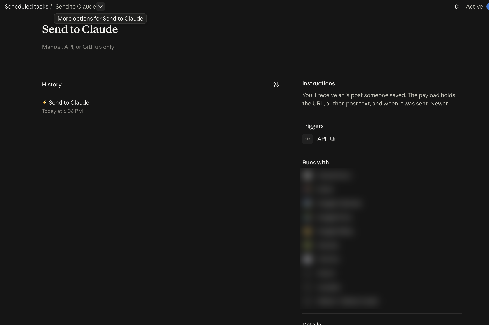
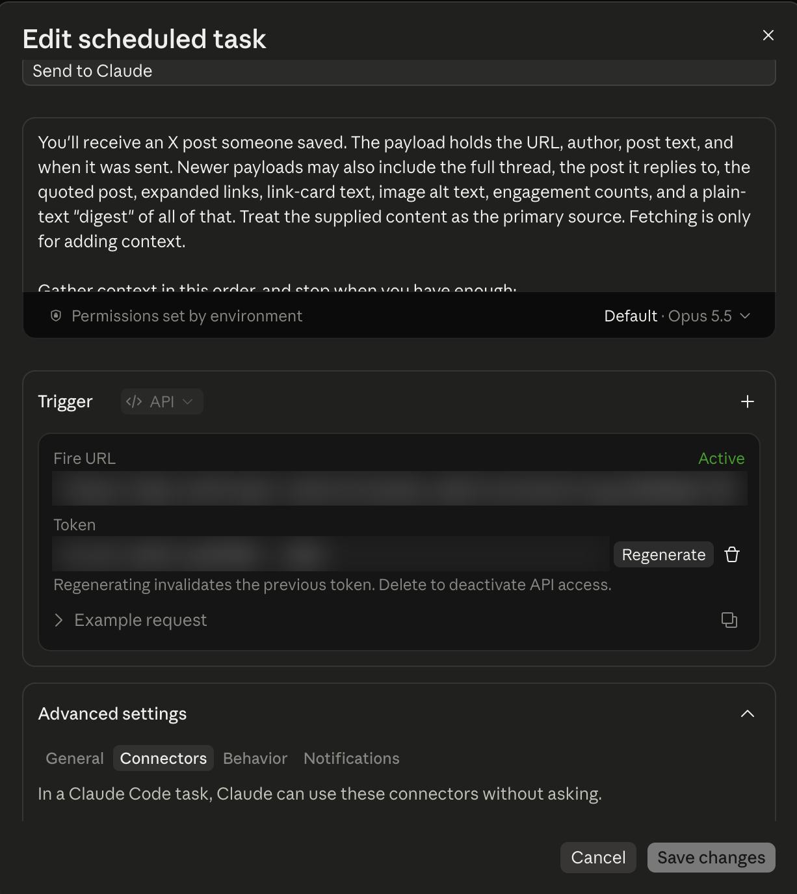

Claude
Two ways. The first needs no setup.
- Open Claude in a tab. In the extension, check Send to Claude, leave the box empty, and click Save. Clicking a post opens Claude with the post filled in. You press Send.
- A routine runs on its own. Claude will not let another tool create that task, so the clicks below are yours. You need Claude Pro, Max, Team, or Enterprise, with Claude Code on the web.
1. Create the task
- On claude.ai, in the left sidebar, click Routines. The page is titled Scheduled tasks.
- Create a task and name it Send to Claude.
- Paste the task prompt. In the extension settings, open Send to Claude and click Copy task prompt. The same text is in the box below.
Open the extension settings and click Copy task prompt.
2. Copy the Fire URL and the token
- On the task page, click the three dots (...) at the top right, next to the Active toggle.
- Click Edit.
- Set the Trigger dropdown to API.
- Copy the Fire URL. It looks like https://api.anthropic.com/v1/claude_code/routines/trig_…
- Copy the token. The round-arrows Regenerate button makes a new token and the old one stops working.
In the extension, open Send to Claude and paste both into the one box, in any order. Click Save. If Chrome asks to allow api.anthropic.com, choose Allow.


3. Allow the websites
This is not in the task editor. Do a first test send so a run exists, then:
- On the task page, in the History column, open any past run.
- At the top of the main pane, click the down arrow next to the task name.
- Click Edit cloud environment.
- Set Network access to Custom.
- Paste the list into Allowed domains. In the extension, click Copy allowed websites. The same list is below.
- Click Save.
api.fxtwitter.com fxtwitter.com api.vxtwitter.com vxtwitter.com fixupx.com x.com twitter.com t.co video.twimg.com pbs.twimg.com
After this, a send shows up under History on the task page. Leave the task Active. To replace a token, open the three dots, click Edit, click Regenerate, paste the new token into the extension, and click Save.